favicon.ico
docs/images/brand/favicon.ico
原名：docs/images/favicon.ico
1024 × 1024 · 77 KB
当前文档未引用（保留）
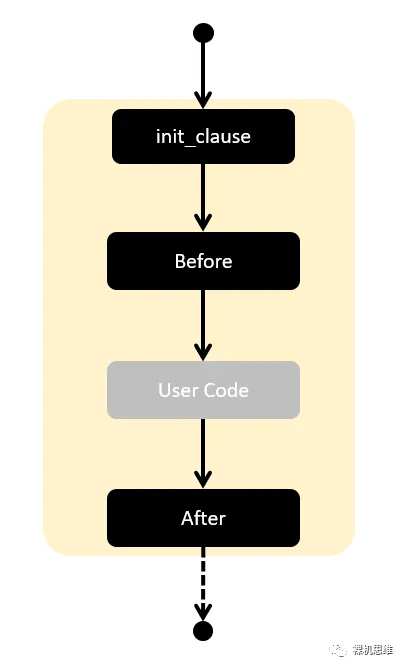
queue-loop.jpg
docs/images/components/queue/queue-loop.jpg
原名：docs/images/components/queue/for.jpg
405 × 668 · 40 KB
docs/components/queue.md
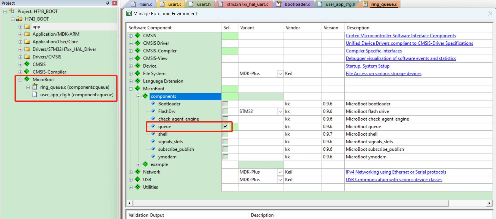
queue.jpg
docs/images/components/queue/queue.jpg
原名：docs/images/components/queue/queue.jpg
1960 × 868 · 378 KB
当前文档未引用（保留）
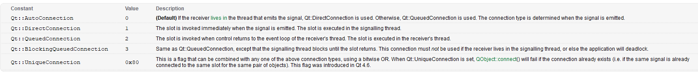
signals-slots.png
docs/images/components/signals-slots/signals-slots.png
原名：docs/images/components/signals_slots/signals_slots.png
1607 × 170 · 35 KB
当前文档未引用（保留）
agent-hardware-loop.drawio.png
docs/images/embedded-ai/agent-hardware-loop.drawio.png
原名：docs/images/microlink/AI-Agent-Skills-下载器-MCU-闭环.drawio.png
1060 × 720 · 135 KB
当前文档未引用（保留）
ai-overview.png
docs/images/embedded-ai/ai-overview.png
原名：docs/images/microlink/AI.png
1024 × 1536 · 2008 KB
当前文档未引用（保留）
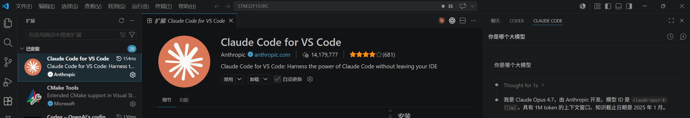
claude.png
docs/images/embedded-ai/claude.png
原名：docs/images/microlink/claude.png
2550 × 437 · 153 KB
当前文档未引用（保留）
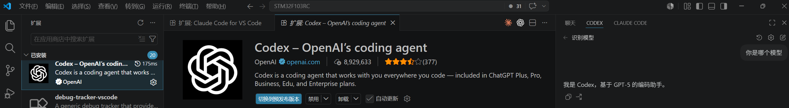
codex.png
docs/images/embedded-ai/codex.png
原名：docs/images/microlink/codex.png
2538 × 348 · 143 KB
当前文档未引用（保留）
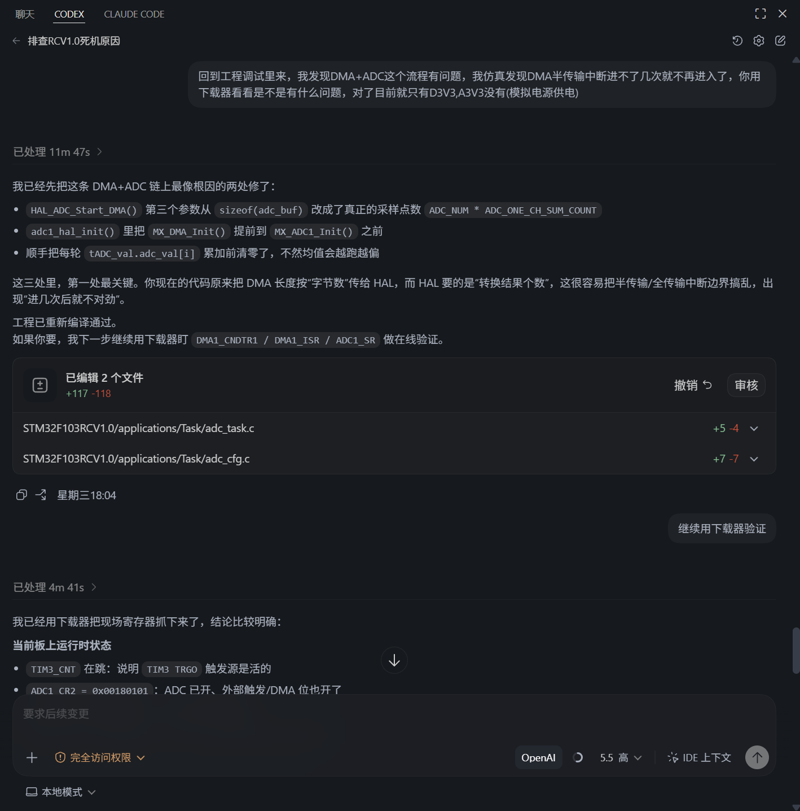
dma-adc-case-01.png
docs/images/embedded-ai/dma-adc-case-01.png
原名：docs/images/microlink/1.png
1418 × 1436 · 237 KB
当前文档未引用（保留）
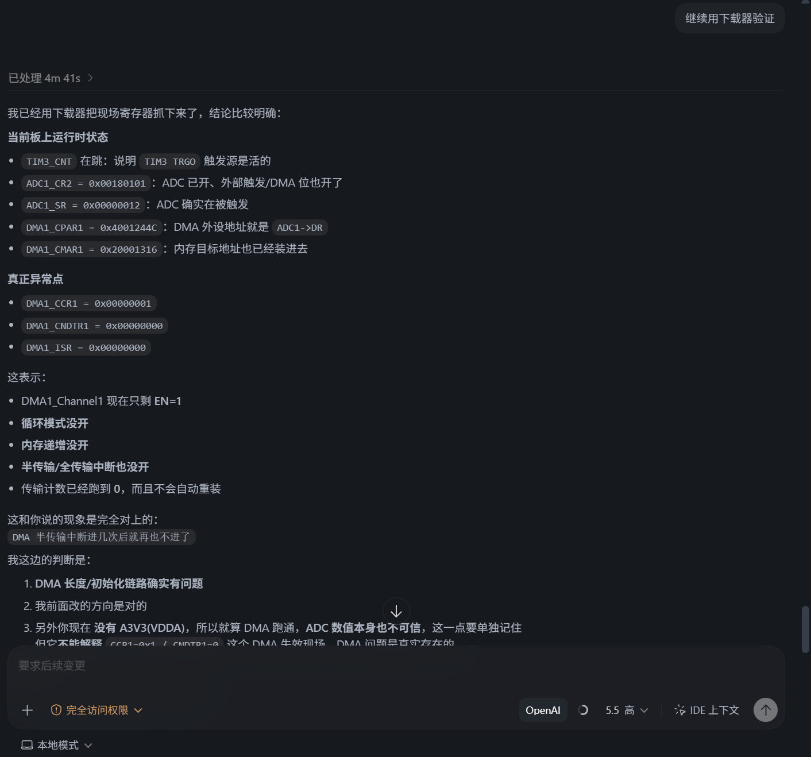
dma-adc-case-02.png
docs/images/embedded-ai/dma-adc-case-02.png
原名：docs/images/microlink/2.png
1412 × 1318 · 191 KB
当前文档未引用（保留）
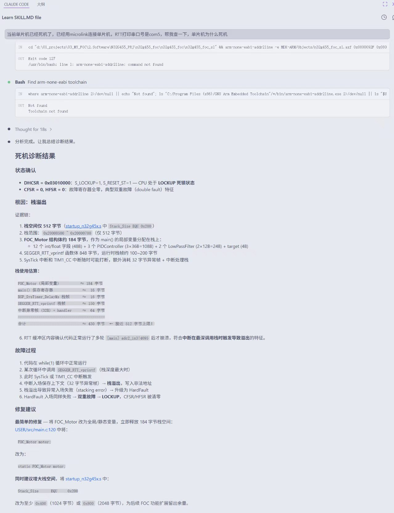
hardfault-case-01.jpg
docs/images/embedded-ai/hardfault-case-01.jpg
原名：docs/images/microlink/HardFault_1.jpg
1279 × 1662 · 163 KB
当前文档未引用（保留）
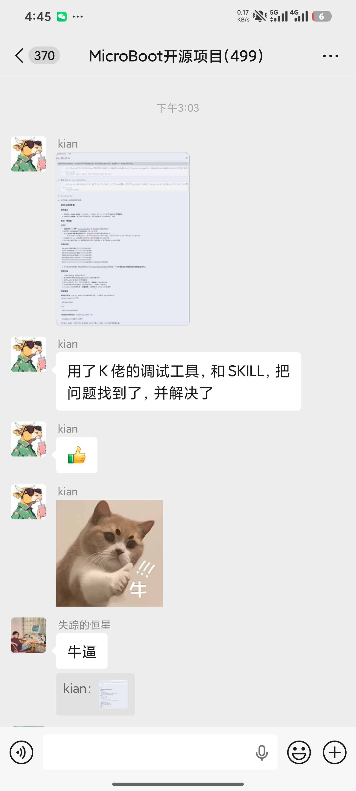
hardfault-case-02.jpg
docs/images/embedded-ai/hardfault-case-02.jpg
原名：docs/images/microlink/HardFault_2.jpg
1440 × 3200 · 470 KB
当前文档未引用（保留）
hardfault-case-03.jpg
docs/images/embedded-ai/hardfault-case-03.jpg
原名：docs/images/microlink/HardFault_3.jpg
1440 × 3200 · 751 KB
当前文档未引用（保留）
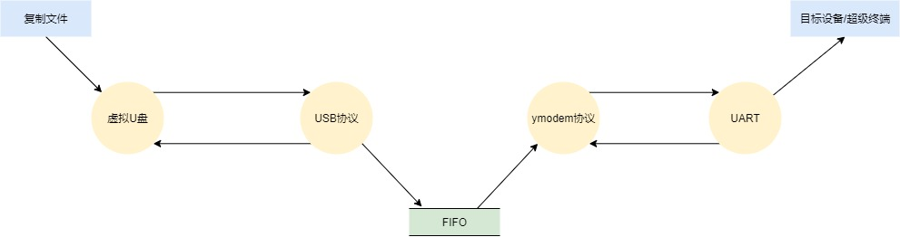
firmware-transfer-flow.jpg
docs/images/knowledge/firmware-transfer-flow.jpg
原名：docs/images/microlink/data_flow.jpg
991 × 262 · 16 KB
当前文档未引用（保留）
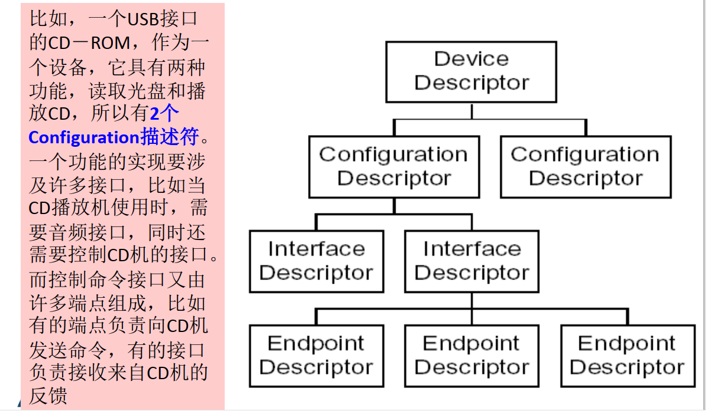
descriptor-hierarchy.jpg
docs/images/knowledge/usb/descriptor-hierarchy.jpg
原名：docs/images/USB_4.jpg
1194 × 697 · 226 KB
当前文档未引用（保留）
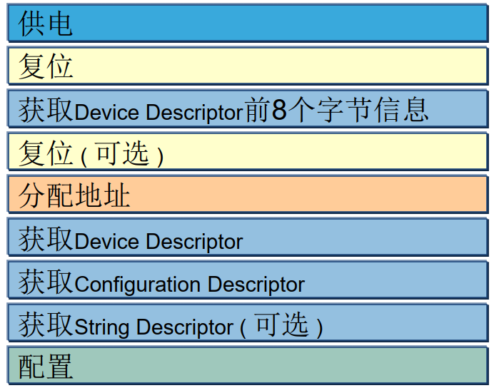
enumeration-sequence.png
docs/images/knowledge/usb/enumeration-sequence.png
原名：docs/images/USB_3.png
692 × 544 · 68 KB
当前文档未引用（保留）
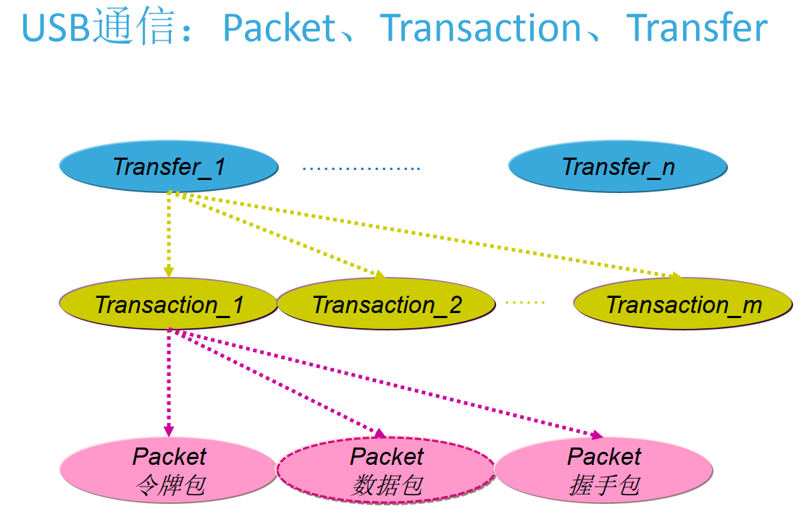
packet-transaction-transfer.png
docs/images/knowledge/usb/packet-transaction-transfer.png
原名：docs/images/USB_2.png
1110 × 711 · 94 KB
当前文档未引用（保留）
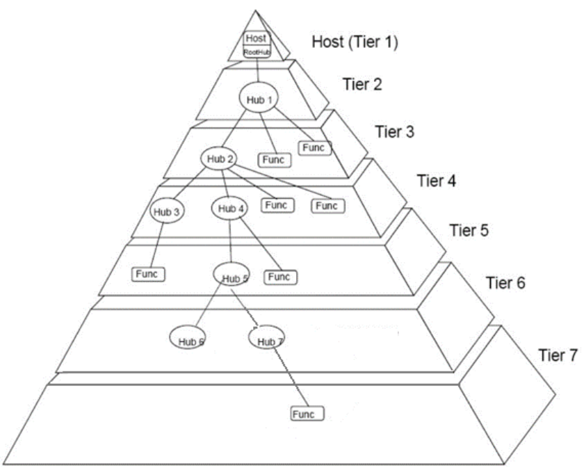
topology-tiers.jpg
docs/images/knowledge/usb/topology-tiers.jpg
原名：docs/images/USB_1.jpg
840 × 676 · 198 KB
当前文档未引用（保留）
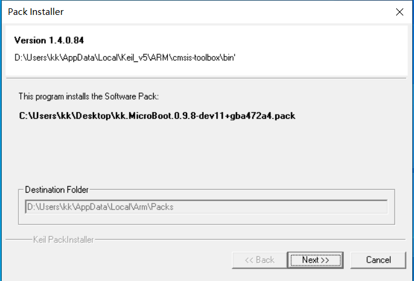
step-01.png
docs/images/microboot/cmsis-pack/step-01.png
原名：docs/images/quick-start/cmsis_pack.png
695 × 471 · 31 KB
docs/microboot/getting-started/cmsis-pack.md
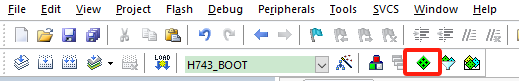
step-02.png
docs/images/microboot/cmsis-pack/step-02.png
原名：docs/images/quick-start/cmsis_pack_2.png
519 × 81 · 11 KB
docs/microboot/getting-started/cmsis-pack.md
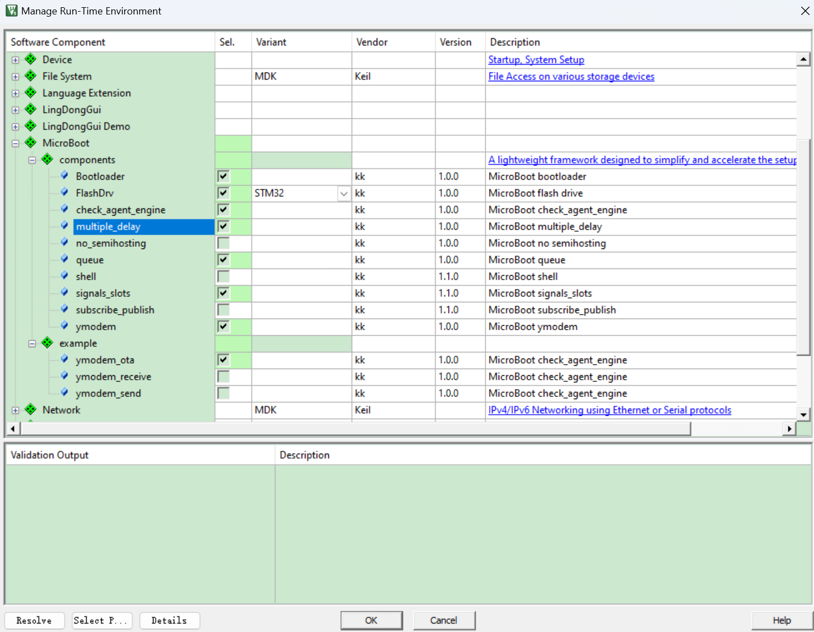
step-03.png
docs/images/microboot/cmsis-pack/step-03.png
原名：docs/images/quick-start/cmsis_pack_3.png
1463 × 1137 · 254 KB
docs/microboot/getting-started/cmsis-pack.md
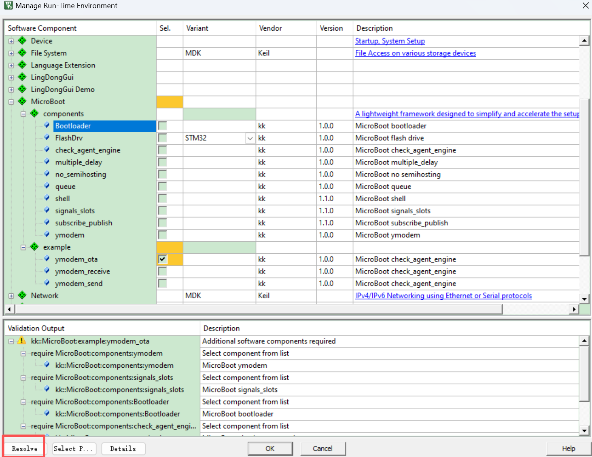
step-04.png
docs/images/microboot/cmsis-pack/step-04.png
原名：docs/images/quick-start/cmsis_pack_4.png
1463 × 1131 · 362 KB
docs/microboot/getting-started/cmsis-pack.md
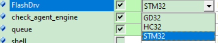
step-05.jpg
docs/images/microboot/cmsis-pack/step-05.jpg
原名：docs/images/quick-start/cmsis_pack_5.jpg
442 × 89 · 15 KB
docs/microboot/getting-started/cmsis-pack.md
step-06.jpg
docs/images/microboot/cmsis-pack/step-06.jpg
原名：docs/images/quick-start/cmsis_pack_6.jpg
207 × 56 · 1 KB
docs/microboot/getting-started/cmsis-pack.md
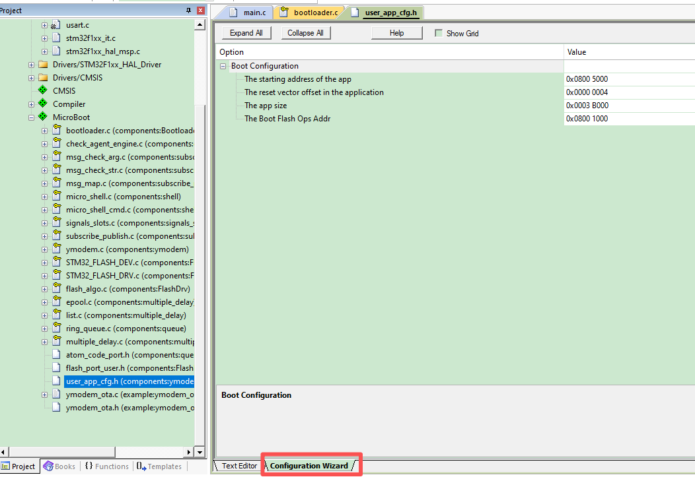
step-07.png
docs/images/microboot/cmsis-pack/step-07.png
原名：docs/images/quick-start/cmsis_pack_7.png
1052 × 723 · 66 KB
docs/microboot/configuration.md; docs/microboot/getting-started/cmsis-pack.md
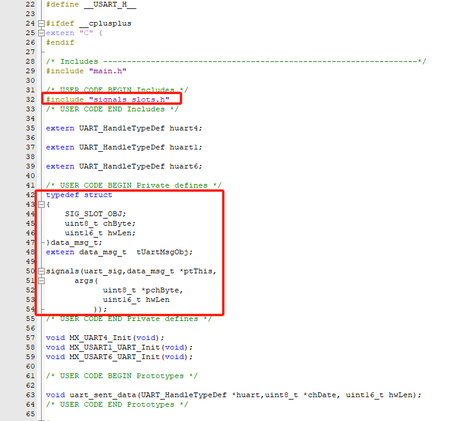
step-08.png
docs/images/microboot/cmsis-pack/step-08.png
原名：docs/images/quick-start/cmsis_pack_8.png
771 × 707 · 41 KB
docs/microboot/getting-started/cmsis-pack.md
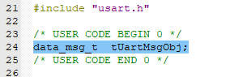
step-09.png
docs/images/microboot/cmsis-pack/step-09.png
原名：docs/images/quick-start/cmsis_pack_9.png
300 × 95 · 4 KB
docs/microboot/getting-started/cmsis-pack.md
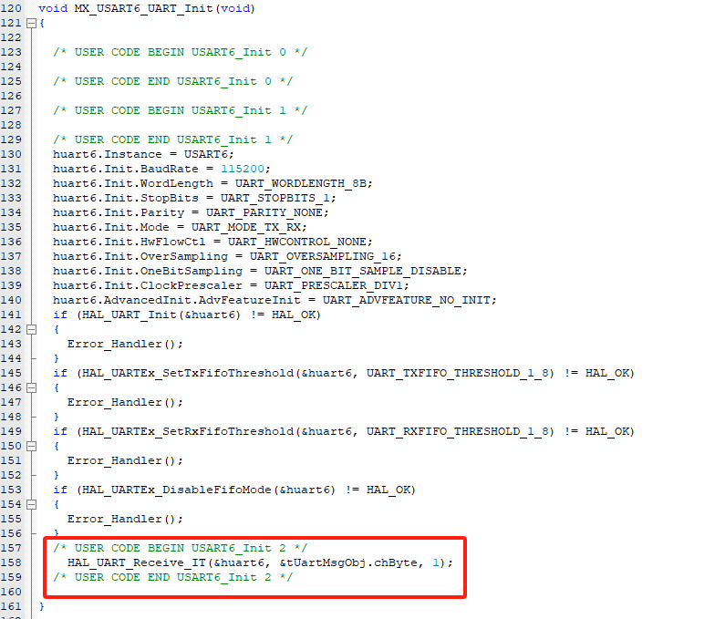
step-10.jpg
docs/images/microboot/cmsis-pack/step-10.jpg
原名：docs/images/quick-start/cmsis_pack_10.jpg
795 × 679 · 49 KB
docs/microboot/getting-started/cmsis-pack.md
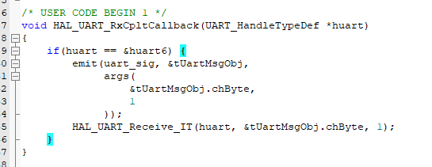
step-11.jpg
docs/images/microboot/cmsis-pack/step-11.jpg
原名：docs/images/quick-start/cmsis_pack_11.jpg
545 × 211 · 10 KB
docs/microboot/getting-started/cmsis-pack.md
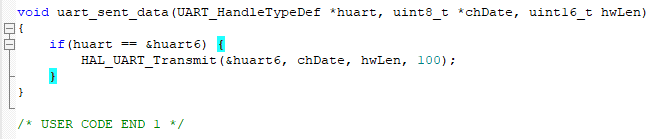
step-12.jpg
docs/images/microboot/cmsis-pack/step-12.jpg
原名：docs/images/quick-start/cmsis_pack_12.jpg
666 × 139 · 6 KB
docs/microboot/getting-started/cmsis-pack.md
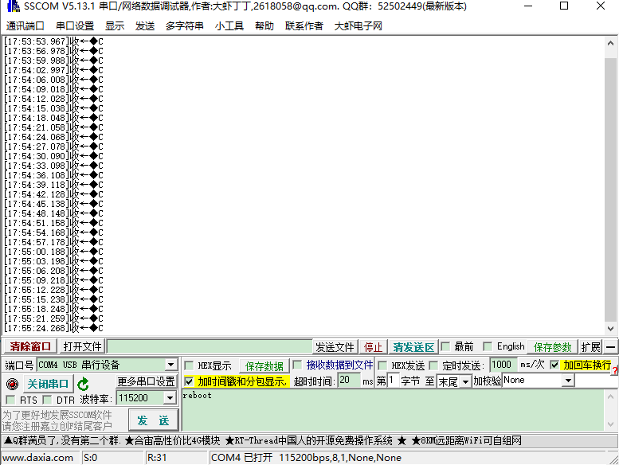
step-13.png
docs/images/microboot/cmsis-pack/step-13.png
原名：docs/images/quick-start/cmsis_pack_13.png
777 × 584 · 37 KB
docs/microboot/getting-started/cmsis-pack.md
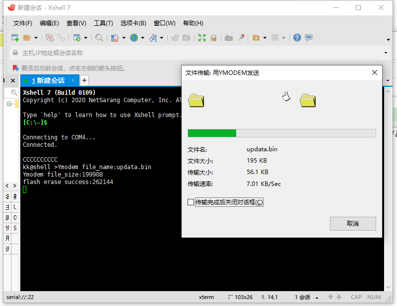
step-14.jpg
docs/images/microboot/cmsis-pack/step-14.jpg
原名：docs/images/quick-start/cmsis_pack_14.jpg
800 × 617 · 47 KB
docs/microboot/getting-started/cmsis-pack.md
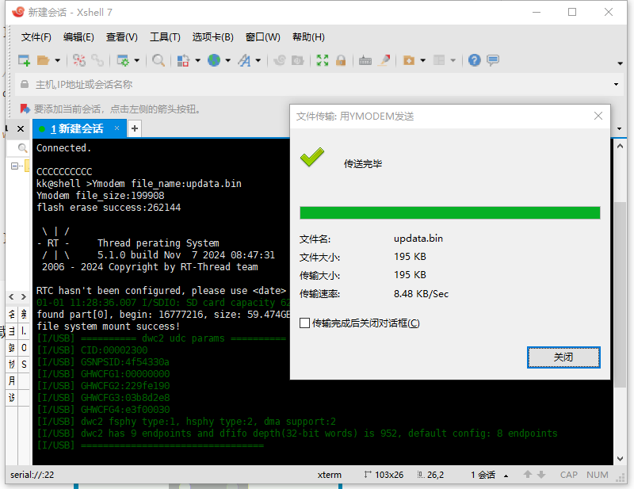
step-15.jpg
docs/images/microboot/cmsis-pack/step-15.jpg
原名：docs/images/quick-start/cmsis_pack_15.jpg
800 × 617 · 58 KB
docs/microboot/getting-started/cmsis-pack.md
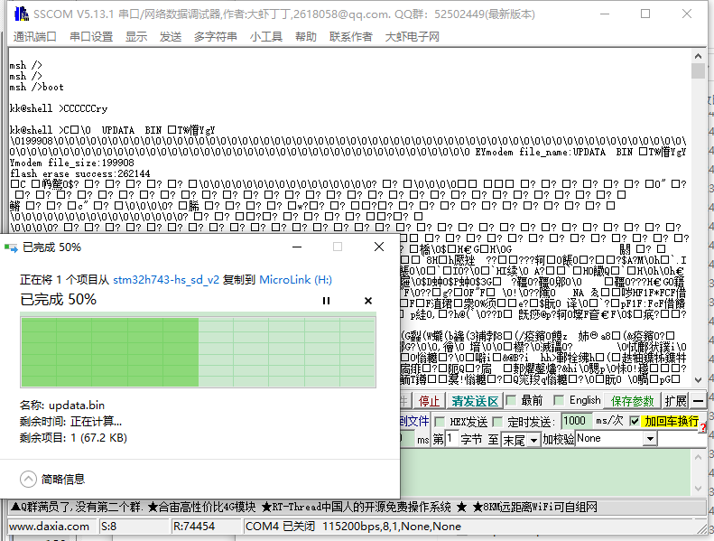
step-16.png
docs/images/microboot/cmsis-pack/step-16.png
原名：docs/images/quick-start/cmsis_pack_16.png
791 × 599 · 55 KB
docs/microboot/getting-started/cmsis-pack.md
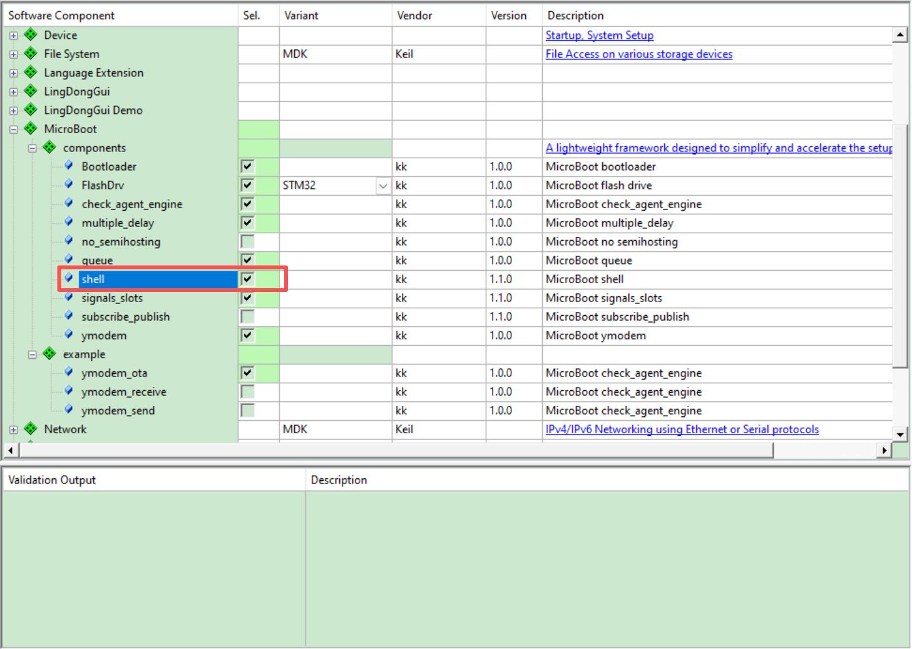
step-17.png
docs/images/microboot/cmsis-pack/step-17.png
原名：docs/images/quick-start/cmsis_pack_17.png
1457 × 1038 · 240 KB
docs/microboot/getting-started/cmsis-pack.md
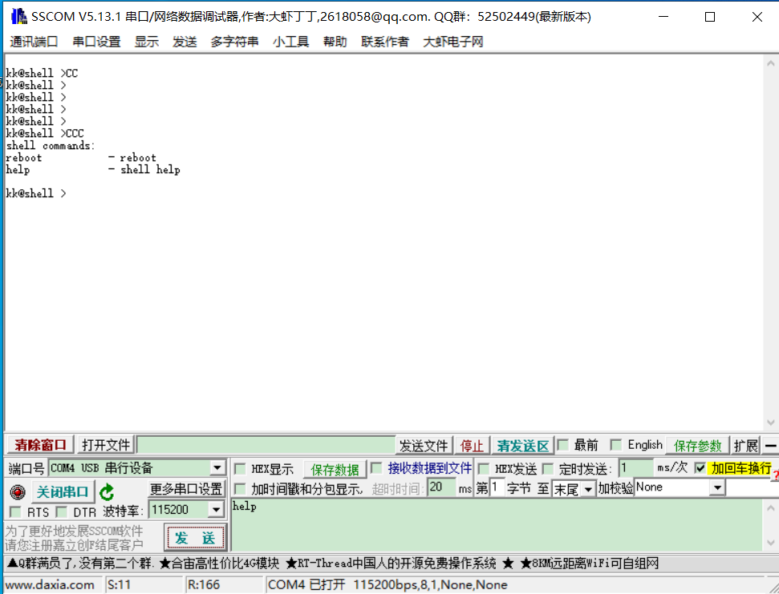
step-18.jpg
docs/images/microboot/cmsis-pack/step-18.jpg
原名：docs/images/quick-start/cmsis_pack_18.jpg
971 × 741 · 94 KB
docs/microboot/getting-started/cmsis-pack.md
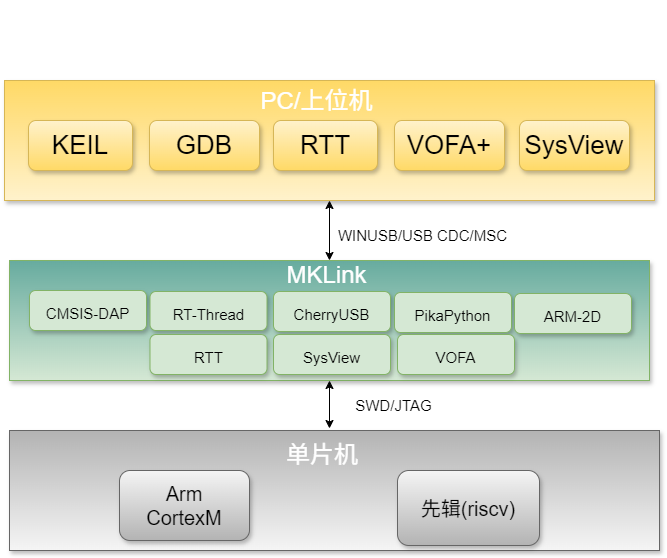
architecture.drawio.png
docs/images/microboot/diagrams/architecture.drawio.png
原名：docs/images/架构.drawio.png
667 × 558 · 78 KB
当前文档未引用（保留）
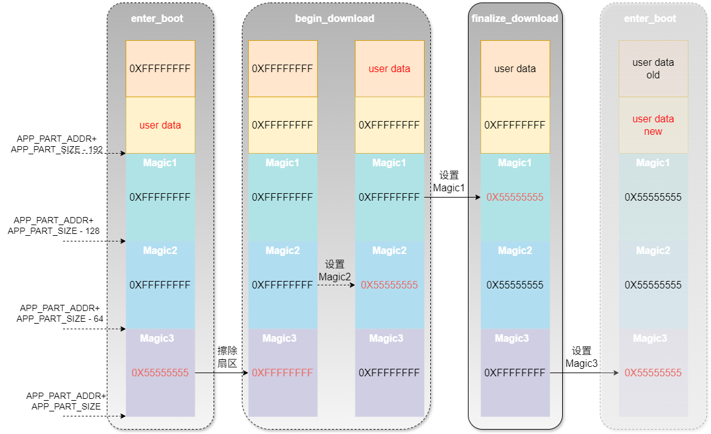
flash-user-data.png
docs/images/microboot/diagrams/flash-user-data.png
原名：docs/images/flash_user.png
1132 × 692 · 159 KB
docs/index.md
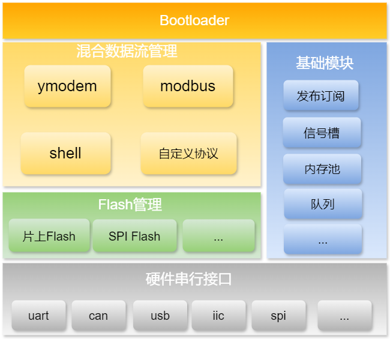
framework.png
docs/images/microboot/diagrams/framework.png
原名：docs/images/frame.png
650 × 565 · 109 KB
docs/index.md
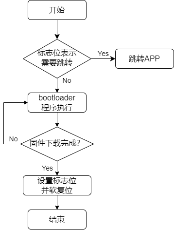
reset-startup-flow.png
docs/images/microboot/diagrams/reset-startup-flow.png
原名：docs/images/updata.png
358 × 472 · 29 KB
docs/index.md
secure-startup.png
docs/images/microboot/diagrams/secure-startup.png
原名：docs/images/芯片安全保护启动.png
1254 × 1254 · 1893 KB
当前文档未引用（保留）
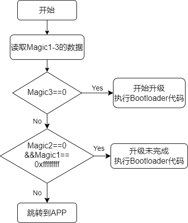
update-flow-variant-01.png
docs/images/microboot/diagrams/update-flow-variant-01.png
原名：docs/images/NewUpada.png
381 × 451 · 31 KB
当前文档未引用（保留）
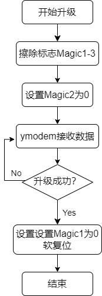
update-flow-variant-02.png
docs/images/microboot/diagrams/update-flow-variant-02.png
原名：docs/images/NewUpada1.png
173 × 501 · 25 KB
当前文档未引用（保留）
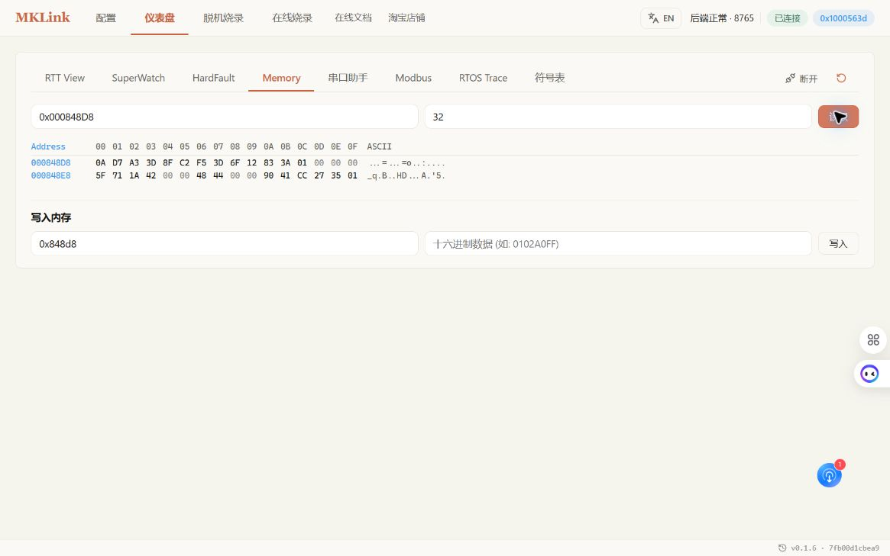
memory-pid-ram.png
docs/images/mklink/cases/hpm5301/memory-pid-ram.png
原名：docs/images/microlink/hpm5301/memory-pid-ram.png
1165 × 729 · 41 KB
docs/mklink/hpm/hpm5301-freertos.md
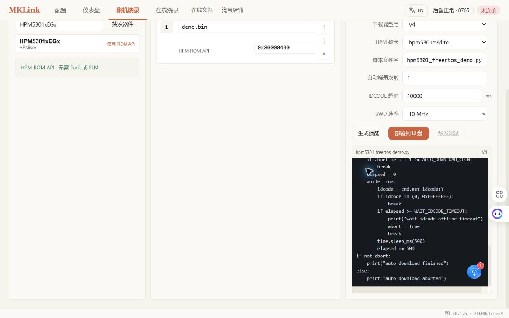
offline-rom-api-preview.png
docs/images/mklink/cases/hpm5301/offline-rom-api-preview.png
原名：docs/images/microlink/hpm5301/offline-rom-api-preview.png
1165 × 729 · 55 KB
docs/embedded-ai/workflows/offline-workflow.md; docs/mklink/flashing/offline-flash.md; docs/mklink/hpm/hpm5301-freertos.md; docs/mklink/mklink-vs-jlink.md
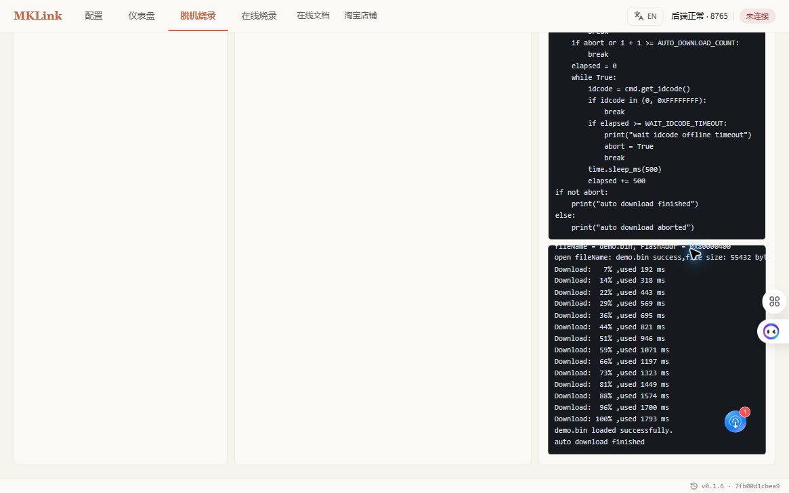
offline-trigger-succeeded.png
docs/images/mklink/cases/hpm5301/offline-trigger-succeeded.png
原名：docs/images/microlink/hpm5301/offline-trigger-succeeded.png
1165 × 729 · 62 KB
docs/mklink/hpm/hpm5301-freertos.md
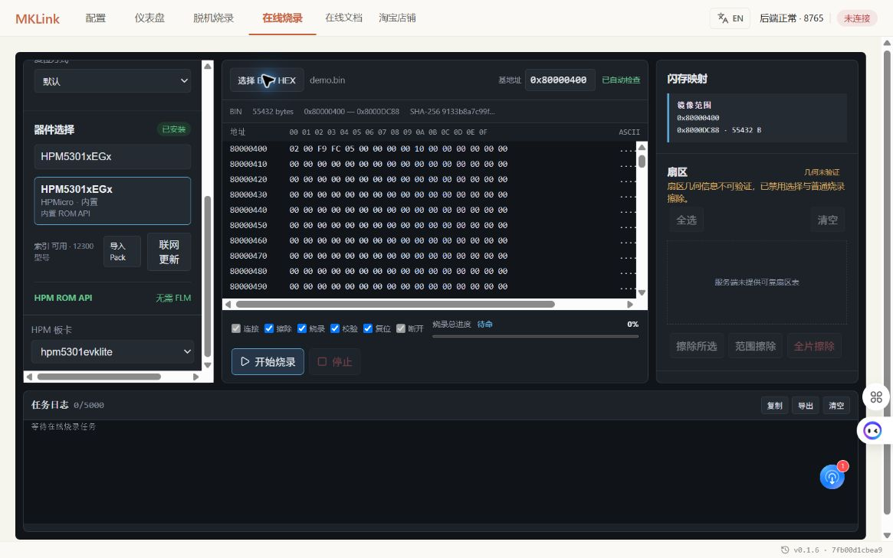
online-flash-ready.png
docs/images/mklink/cases/hpm5301/online-flash-ready.png
原名：docs/images/microlink/hpm5301/online-flash-ready.png
1165 × 729 · 99 KB
docs/mklink/hpm/hpm5301-freertos.md
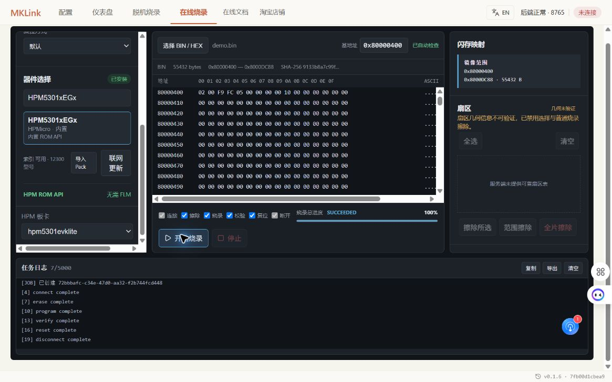
online-flash-succeeded.png
docs/images/mklink/cases/hpm5301/online-flash-succeeded.png
原名：docs/images/microlink/hpm5301/online-flash-succeeded.png
1165 × 729 · 98 KB
docs/embedded-ai/workflows/flash-workflow.md; docs/mklink/flashing/online-flash.md; docs/mklink/hpm/hpm5301-freertos.md; docs/mklink/mklink-vs-jlink.md
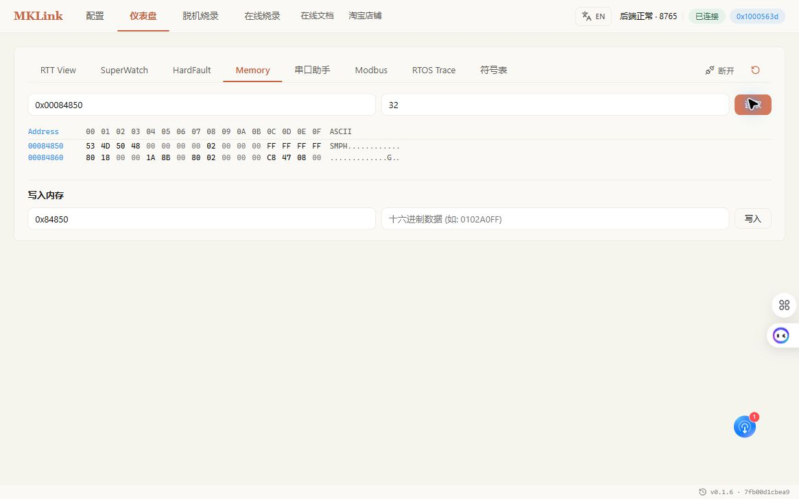
riscv-trap-memory.png
docs/images/mklink/cases/hpm5301/riscv-trap-memory.png
原名：docs/images/microlink/hpm5301/riscv-trap-memory.png
1165 × 729 · 41 KB
docs/mklink/debugging/hardfault.md; docs/mklink/hpm/hpm5301-freertos.md
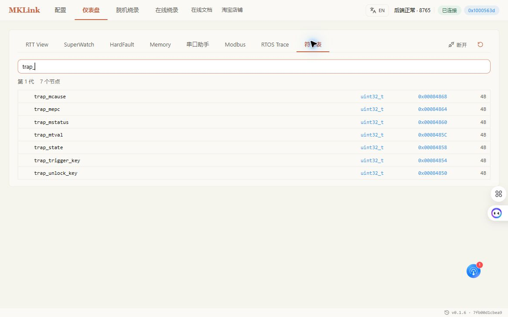
riscv-trap-symbols.png
docs/images/mklink/cases/hpm5301/riscv-trap-symbols.png
原名：docs/images/microlink/hpm5301/riscv-trap-symbols.png
1165 × 729 · 46 KB
docs/mklink/hpm/hpm5301-freertos.md
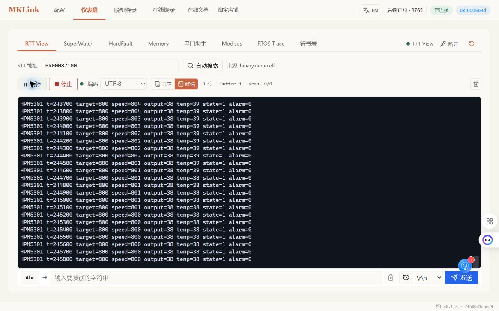
rtt-view-running.png
docs/images/mklink/cases/hpm5301/rtt-view-running.png
原名：docs/images/microlink/hpm5301/rtt-view-running.png
1165 × 729 · 132 KB
docs/mklink/hpm/hpm5301-freertos.md
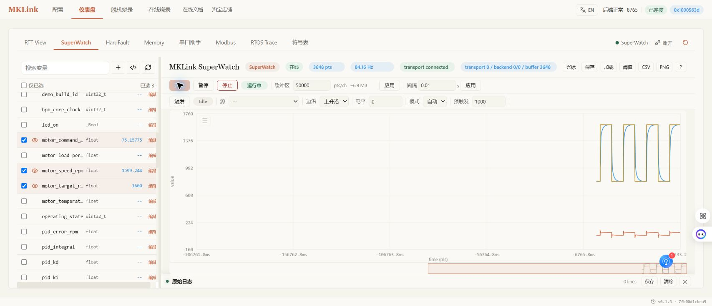
superwatch-pid-running.png
docs/images/mklink/cases/hpm5301/superwatch-pid-running.png
原名：docs/images/microlink/hpm5301/superwatch-pid-running.png
1707 × 735 · 89 KB
docs/mklink/hpm/hpm5301-freertos.md
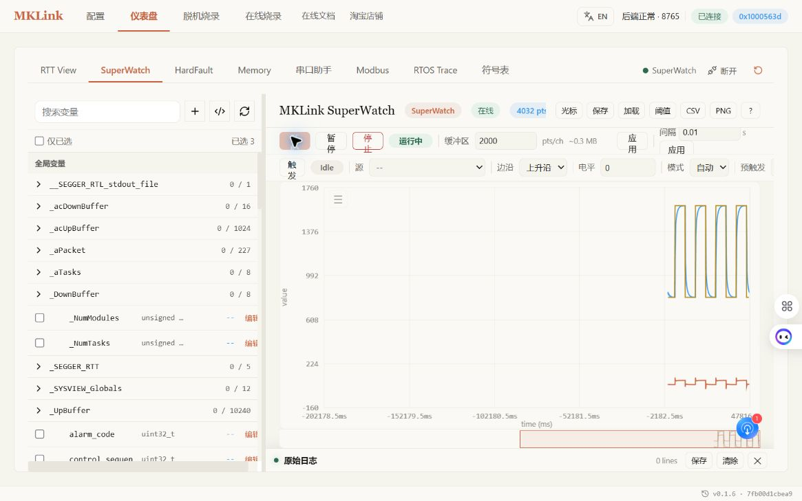
superwatch-pid-step.png
docs/images/mklink/cases/hpm5301/superwatch-pid-step.png
原名：docs/images/microlink/hpm5301/superwatch-pid-step.png
1165 × 729 · 70 KB
当前文档未引用（保留）
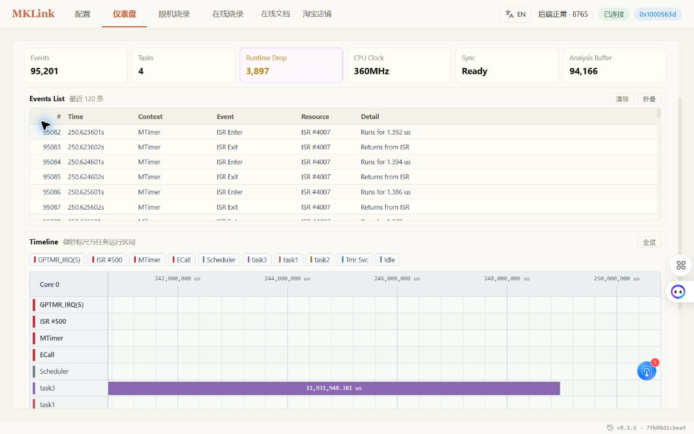
systemview-freertos-running.png
docs/images/mklink/cases/hpm5301/systemview-freertos-running.png
原名：docs/images/microlink/hpm5301/systemview-freertos-running.png
1165 × 729 · 75 KB
docs/mklink/hpm/hpm5301-freertos.md
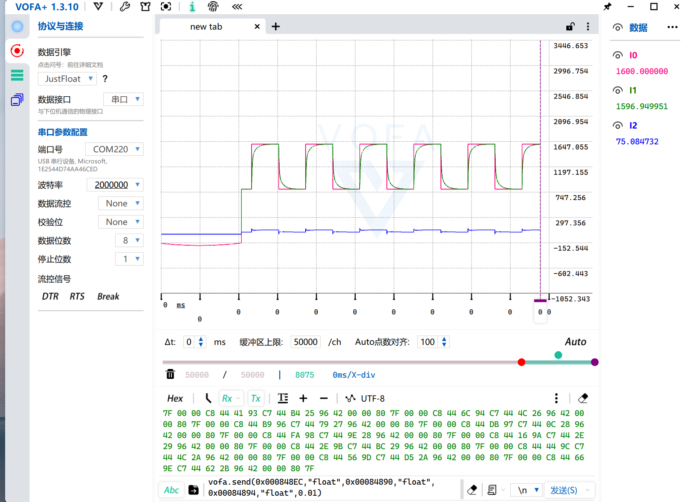
vofa-plus-pid-step.png
docs/images/mklink/cases/hpm5301/vofa-plus-pid-step.png
原名：docs/images/microlink/hpm5301/vofa-plus-pid-step.png
1737 × 1272 · 336 KB
docs/mklink/hpm/hpm5301-freertos.md; docs/mklink/observation/vofa.md
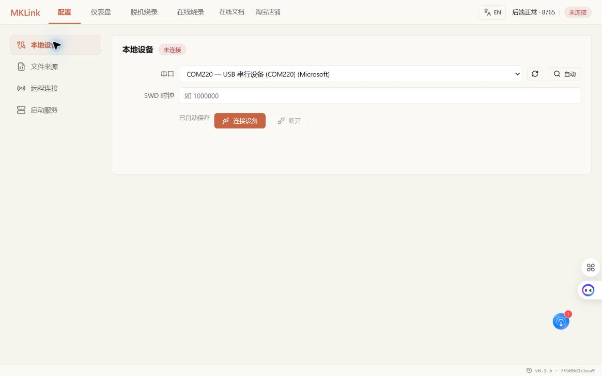
web-config-device.png
docs/images/mklink/cases/hpm5301/web-config-device.png
原名：docs/images/microlink/hpm5301/web-config-device.png
1165 × 729 · 30 KB
docs/mklink/getting-started/gui-install.md; docs/mklink/getting-started/project-config.md; docs/mklink/hpm/hpm5301-freertos.md
web-config-files.png
docs/images/mklink/cases/hpm5301/web-config-files.png
原名：docs/images/microlink/hpm5301/web-config-files.png
1165 × 729 · 40 KB
docs/mklink/hpm/hpm5301-freertos.md
01-elf-loaded.png
docs/images/mklink/cases/hpm5301-hello-world/01-elf-loaded.png
原名：docs/images/mklink/cases/hpm5301-hello-world/01-elf-loaded.png
1707 × 735 · 45 KB
当前文档未引用（保留）
02-superwatch-wave16.png
docs/images/mklink/cases/hpm5301-hello-world/02-superwatch-wave16.png
原名：docs/images/mklink/cases/hpm5301-hello-world/02-superwatch-wave16.png
1707 × 735 · 154 KB
当前文档未引用（保留）
03-superwatch-cursors.png
docs/images/mklink/cases/hpm5301-hello-world/03-superwatch-cursors.png
原名：docs/images/mklink/cases/hpm5301-hello-world/03-superwatch-cursors.png
1707 × 735 · 163 KB
当前文档未引用（保留）
04-superwatch-high-applied.png
docs/images/mklink/cases/hpm5301-hello-world/04-superwatch-high-applied.png
原名：docs/images/mklink/cases/hpm5301-hello-world/04-superwatch-high-applied.png
1707 × 735 · 164 KB
当前文档未引用（保留）
05-superwatch-high-performance.png
docs/images/mklink/cases/hpm5301-hello-world/05-superwatch-high-performance.png
原名：docs/images/mklink/cases/hpm5301-hello-world/05-superwatch-high-performance.png
1707 × 735 · 153 KB
当前文档未引用（保留）
06-superwatch-medium-performance.png
docs/images/mklink/cases/hpm5301-hello-world/06-superwatch-medium-performance.png
原名：docs/images/mklink/cases/hpm5301-hello-world/06-superwatch-medium-performance.png
1707 × 735 · 162 KB
当前文档未引用（保留）
07-superwatch-low-performance.png
docs/images/mklink/cases/hpm5301-hello-world/07-superwatch-low-performance.png
原名：docs/images/mklink/cases/hpm5301-hello-world/07-superwatch-low-performance.png
1707 × 735 · 155 KB
当前文档未引用（保留）
08-memory-build-id.png
docs/images/mklink/cases/hpm5301-hello-world/08-memory-build-id.png
原名：docs/images/mklink/cases/hpm5301-hello-world/08-memory-build-id.png
1707 × 735 · 54 KB
当前文档未引用（保留）
09-rtt-echo.png
docs/images/mklink/cases/hpm5301-hello-world/09-rtt-echo.png
原名：docs/images/mklink/cases/hpm5301-hello-world/09-rtt-echo.png
1707 × 735 · 80 KB
docs/embedded-ai/workflows/rtt-workflow.md; docs/mklink/observation/rtt.md
12-vofa-two-channels.png
docs/images/mklink/cases/hpm5301-hello-world/12-vofa-two-channels.png
原名：docs/images/mklink/cases/hpm5301-hello-world/12-vofa-two-channels.png
1707 × 735 · 63 KB
当前文档未引用（保留）
14-cursor-time-fixed.png
docs/images/mklink/cases/hpm5301-hello-world/14-cursor-time-fixed.png
原名：docs/images/mklink/cases/hpm5301-hello-world/14-cursor-time-fixed.png
1707 × 735 · 195 KB
当前文档未引用（保留）
15-cursor-values-fixed.png
docs/images/mklink/cases/hpm5301-hello-world/15-cursor-values-fixed.png
原名：docs/images/mklink/cases/hpm5301-hello-world/15-cursor-values-fixed.png
1707 × 735 · 187 KB
docs/mklink/observation/superwatch.md
17-single-capture-201.png
docs/images/mklink/cases/hpm5301-hello-world/17-single-capture-201.png
原名：docs/images/mklink/cases/hpm5301-hello-world/17-single-capture-201.png
1707 × 735 · 123 KB
docs/mklink/observation/superwatch.md
20-offline-success.png
docs/images/mklink/cases/hpm5301-hello-world/20-offline-success.png
原名：docs/images/mklink/cases/hpm5301-hello-world/20-offline-success.png
510 × 332 · 28 KB
docs/embedded-ai/workflows/offline-workflow.md; docs/mklink/flashing/offline-flash.md
21-array-index-fixed.png
docs/images/mklink/cases/hpm5301-hello-world/21-array-index-fixed.png
原名：docs/images/mklink/cases/hpm5301-hello-world/21-array-index-fixed.png
1707 × 735 · 90 KB
docs/mklink/observation/superwatch.md
22-rtos-repeat-fixed.png
docs/images/mklink/cases/hpm5301-hello-world/22-rtos-repeat-fixed.png
原名：docs/images/mklink/cases/hpm5301-hello-world/22-rtos-repeat-fixed.png
1707 × 735 · 81 KB
docs/mklink/observation/systemview.md
ai-hardware-workflow-v2.png
docs/images/mklink/cases/hpm5301-hello-world/ai-hardware-workflow-v2.png
原名：docs/images/mklink/cases/hpm5301-hello-world/ai-hardware-workflow-v2.png
1536 × 1024 · 1807 KB
当前文档未引用（保留）
ai-hardware-workflow.png
docs/images/mklink/cases/hpm5301-hello-world/ai-hardware-workflow.png
原名：docs/images/mklink/cases/hpm5301-hello-world/ai-hardware-workflow.png
1536 × 1024 · 1680 KB
当前文档未引用（保留）
codex-superwatch-workflow.png
docs/images/mklink/cases/hpm5301-hello-world/codex-superwatch-workflow.png
原名：docs/images/mklink/cases/hpm5301-hello-world/codex-superwatch-workflow.png
1536 × 1024 · 1736 KB
当前文档未引用（保留）
superwatch-export.png
docs/images/mklink/cases/hpm5301-hello-world/superwatch-export.png
原名：docs/images/mklink/cases/hpm5301-hello-world/superwatch-export.png
1862 × 569 · 685 KB
当前文档未引用（保留）
superwatch-four-speed-20mhz.png
docs/images/mklink/cases/hpm5301-hello-world/superwatch-four-speed-20mhz.png
原名：docs/images/mklink/cases/hpm5301-hello-world/superwatch-four-speed-20mhz.png
1707 × 735 · 85 KB
docs/mklink/hpm/mem-dump-profiles.md
superwatch-four-speed-30mhz.png
docs/images/mklink/cases/hpm5301-hello-world/superwatch-four-speed-30mhz.png
原名：docs/images/mklink/cases/hpm5301-hello-world/superwatch-four-speed-30mhz.png
1707 × 735 · 85 KB
docs/mklink/hpm/mem-dump-profiles.md
superwatch-20mhz.png
docs/images/mklink/cases/hpm6e80/superwatch-20mhz.png
原名：docs/images/mklink/cases/hpm6e80/superwatch-20mhz.png
1707 × 791 · 84 KB
docs/mklink/hpm/hpm6e80.md
superwatch-30mhz.png
docs/images/mklink/cases/hpm6e80/superwatch-30mhz.png
原名：docs/images/mklink/cases/hpm6e80/superwatch-30mhz.png
1707 × 791 · 84 KB
docs/mklink/hpm/hpm6e80.md
ai-live-tuning.gif
docs/images/mklink/cases/hpm6e80-hello-world/ai-live-tuning.gif
原名：docs/images/mklink/cases/hpm6e80-hello-world/ai-live-tuning.gif
1100 × 499 · 1239 KB
docs/mklink/hpm/hpm6e80-performance-validation.md; docs/mklink/hpm/overview.md
ai-tuning-conversation.png
docs/images/mklink/cases/hpm6e80-hello-world/ai-tuning-conversation.png
原名：docs/images/mklink/cases/hpm6e80-hello-world/ai-tuning-conversation.png
1286 × 1053 · 169 KB
docs/mklink/hpm/overview.md
jtag-20m-measured.png
docs/images/mklink/cases/hpm6e80-hello-world/jtag-20m-measured.png
原名：docs/images/mklink/cases/hpm6e80-hello-world/jtag-20m-measured.png
1920 × 1032 · 214 KB
docs/mklink/hpm/hpm6e80-performance-validation.md
jtag-30m-measured.png
docs/images/mklink/cases/hpm6e80-hello-world/jtag-30m-measured.png
原名：docs/images/mklink/cases/hpm6e80-hello-world/jtag-30m-measured.png
1920 × 1032 · 216 KB
docs/mklink/hpm/hpm6e80-performance-validation.md; docs/mklink/hpm/overview.md
memory-pattern.png
docs/images/mklink/cases/hpm6e80-hello-world/memory-pattern.png
原名：docs/images/mklink/cases/hpm6e80-hello-world/memory-pattern.png
1920 × 945 · 45 KB
docs/mklink/hpm/hpm6e80-performance-validation.md
offline-8m-30m.png
docs/images/mklink/cases/hpm6e80-hello-world/offline-8m-30m.png
原名：docs/images/mklink/cases/hpm6e80-hello-world/offline-8m-30m.png
1920 × 945 · 76 KB
docs/mklink/hpm/hpm6e80-performance-validation.md
online-flash-30m.png
docs/images/mklink/cases/hpm6e80-hello-world/online-flash-30m.png
原名：docs/images/mklink/cases/hpm6e80-hello-world/online-flash-30m.png
1920 × 945 · 123 KB
docs/mklink/hpm/hpm6e80-performance-validation.md; docs/mklink/hpm/overview.md
phase-sine-full-gui.png
docs/images/mklink/cases/hpm6e80-hello-world/phase-sine-full-gui.png
原名：docs/images/mklink/cases/hpm6e80-hello-world/phase-sine-full-gui.png
1920 × 945 · 268 KB
docs/mklink/hpm/overview.md
phase-sine-live.gif
docs/images/mklink/cases/hpm6e80-hello-world/phase-sine-live.gif
原名：docs/images/mklink/cases/hpm6e80-hello-world/phase-sine-live.gif
1100 × 499 · 2398 KB
docs/mklink/hpm/overview.md
rtt-echo.png
docs/images/mklink/cases/hpm6e80-hello-world/rtt-echo.png
原名：docs/images/mklink/cases/hpm6e80-hello-world/rtt-echo.png
1920 × 945 · 208 KB
docs/mklink/hpm/overview.md
superwatch-response-adjusted.png
docs/images/mklink/cases/hpm6e80-hello-world/superwatch-response-adjusted.png
原名：docs/images/mklink/cases/hpm6e80-hello-world/superwatch-response-adjusted.png
1920 × 945 · 141 KB
docs/mklink/hpm/hpm6e80-performance-validation.md
superwatch-shared-30m.png
docs/images/mklink/cases/hpm6e80-hello-world/superwatch-shared-30m.png
原名：docs/images/mklink/cases/hpm6e80-hello-world/superwatch-shared-30m.png
1920 × 945 · 147 KB
docs/mklink/hpm/hpm6e80-performance-validation.md
systemview-tasks.png
docs/images/mklink/cases/hpm6e80-hello-world/systemview-tasks.png
原名：docs/images/mklink/cases/hpm6e80-hello-world/systemview-tasks.png
1920 × 945 · 93 KB
docs/mklink/hpm/overview.md
codex-build-flash-runtime-check.png
docs/images/mklink/cases/stm32f103-rt-thread/codex-build-flash-runtime-check.png
原名：docs/images/mklink/cases/stm32f103-rt-thread/codex-build-flash-runtime-check.png
1407 × 951 · 155 KB
docs/embedded-ai/articles/hardware-feedback-loop.md; docs/embedded-ai/cases/stm32f103-rt-thread-history.md; docs/embedded-ai/cases/stm32f103-rt-thread.md; docs/embedded-ai/getting-started/interfaces.md; docs/embedded-ai/overview.md; docs/embedded-ai/workflows/flash-workflow.md; docs/mklink/mklink-vs-jlink.md
config-chrome-30mhz.png
docs/images/mklink/cases/stm32f103-rt-thread/config-chrome-30mhz.png
原名：docs/images/mklink/cases/stm32f103-rt-thread/config-chrome-30mhz.png
1920 × 911 · 44 KB
docs/assets/examples/stm32f103-rt-thread/README.md
pid-after-gui-0920.png
docs/images/mklink/cases/stm32f103-rt-thread/pid-after-gui-0920.png
原名：docs/images/mklink/cases/stm32f103-rt-thread/pid-after-gui-0920.png
1920 × 945 · 96 KB
当前文档未引用（保留）
pid-before-gui-0920.png
docs/images/mklink/cases/stm32f103-rt-thread/pid-before-gui-0920.png
原名：docs/images/mklink/cases/stm32f103-rt-thread/pid-before-gui-0920.png
1920 × 945 · 106 KB
当前文档未引用（保留）
pid-comparison-0920.png
docs/images/mklink/cases/stm32f103-rt-thread/pid-comparison-0920.png
原名：docs/images/mklink/cases/stm32f103-rt-thread/pid-comparison-0920.png
1950 × 1200 · 144 KB
docs/embedded-ai/cases/stm32f103-rt-thread.md
pid-tuning-30mhz-live.gif
docs/images/mklink/cases/stm32f103-rt-thread/pid-tuning-30mhz-live.gif
原名：docs/images/mklink/cases/stm32f103-rt-thread/pid-tuning-30mhz-live.gif
1100 × 455 · 4918 KB
docs/embedded-ai/cases/stm32f103-rt-thread.md
stm32-codex-superwatch-workflow.png
docs/images/mklink/cases/stm32f103-rt-thread/stm32-codex-superwatch-workflow.png
原名：docs/images/mklink/cases/stm32f103-rt-thread/stm32-codex-superwatch-workflow.png
1536 × 1024 · 1805 KB
docs/embedded-ai/cases/stm32f103-rt-thread-history.md; docs/embedded-ai/cases/stm32f103-rt-thread.md; docs/embedded-ai/getting-started/interfaces.md
stm32-hardfault-source.png
docs/images/mklink/cases/stm32f103-rt-thread/stm32-hardfault-source.png
原名：docs/images/mklink/cases/stm32f103-rt-thread/stm32-hardfault-source.png
1707 × 735 · 65 KB
docs/embedded-ai/cases/stm32f103-rt-thread-history.md; docs/embedded-ai/cases/stm32f103-rt-thread.md; docs/embedded-ai/workflows/hardfault-workflow.md; docs/mklink/debugging/hardfault.md; docs/mklink/mklink-vs-jlink.md
stm32-memory-write-readback.png
docs/images/mklink/cases/stm32f103-rt-thread/stm32-memory-write-readback.png
原名：docs/images/mklink/cases/stm32f103-rt-thread/stm32-memory-write-readback.png
1707 × 735 · 54 KB
docs/embedded-ai/cases/stm32f103-rt-thread-history.md; docs/embedded-ai/cases/stm32f103-rt-thread.md; docs/embedded-ai/workflows/memory-workflow.md; docs/mklink/debugging/memory.md
stm32-pid-three-channels.png
docs/images/mklink/cases/stm32f103-rt-thread/stm32-pid-three-channels.png
原名：docs/images/mklink/cases/stm32f103-rt-thread/stm32-pid-three-channels.png
1707 × 791 · 98 KB
docs/embedded-ai/cases/stm32f103-rt-thread-history.md; docs/embedded-ai/workflows/pid-workflow.md; docs/mklink/mklink-vs-jlink.md; docs/mklink/observation/superwatch.md
stm32-rtos-stopped.png
docs/images/mklink/cases/stm32f103-rt-thread/stm32-rtos-stopped.png
原名：docs/images/mklink/cases/stm32f103-rt-thread/stm32-rtos-stopped.png
1707 × 735 · 101 KB
当前文档未引用（保留）
stm32-rtos-timeline.png
docs/images/mklink/cases/stm32f103-rt-thread/stm32-rtos-timeline.png
原名：docs/images/mklink/cases/stm32f103-rt-thread/stm32-rtos-timeline.png
1707 × 735 · 83 KB
docs/embedded-ai/cases/stm32f103-rt-thread-history.md; docs/embedded-ai/cases/stm32f103-rt-thread.md; docs/embedded-ai/workflows/systemview-workflow.md; docs/mklink/mklink-vs-jlink.md; docs/mklink/observation/systemview.md
stm32-rtt-console-version.png
docs/images/mklink/cases/stm32f103-rt-thread/stm32-rtt-console-version.png
原名：docs/images/mklink/cases/stm32f103-rt-thread/stm32-rtt-console-version.png
1707 × 735 · 74 KB
docs/embedded-ai/cases/stm32f103-rt-thread-history.md; docs/embedded-ai/cases/stm32f103-rt-thread.md; docs/embedded-ai/workflows/rtt-workflow.md; docs/mklink/articles/mcu-debugging-companion.md; docs/mklink/mklink-vs-jlink.md; docs/mklink/observation/rtt.md
stm32-rtt-live.png
docs/images/mklink/cases/stm32f103-rt-thread/stm32-rtt-live.png
原名：docs/images/mklink/cases/stm32f103-rt-thread/stm32-rtt-live.png
1707 × 791 · 83 KB
当前文档未引用（保留）
stm32-superwatch-sine-cover.png
docs/images/mklink/cases/stm32f103-rt-thread/stm32-superwatch-sine-cover.png
原名：docs/images/mklink/cases/stm32f103-rt-thread/stm32-superwatch-sine-cover.png
1672 × 941 · 1342 KB
当前文档未引用（保留）
stm32-superwatch-single-10m.png
docs/images/mklink/cases/stm32f103-rt-thread/stm32-superwatch-single-10m.png
原名：docs/images/mklink/cases/stm32f103-rt-thread/stm32-superwatch-single-10m.png
1707 × 735 · 85 KB
当前文档未引用（保留）
superwatch-chrome-10mhz.png
docs/images/mklink/cases/stm32f103-rt-thread/superwatch-chrome-10mhz.png
原名：docs/images/mklink/cases/stm32f103-rt-thread/superwatch-chrome-10mhz.png
1920 × 911 · 104 KB
docs/assets/examples/stm32f103-rt-thread/README.md
superwatch-chrome-20mhz.png
docs/images/mklink/cases/stm32f103-rt-thread/superwatch-chrome-20mhz.png
原名：docs/images/mklink/cases/stm32f103-rt-thread/superwatch-chrome-20mhz.png
1920 × 911 · 103 KB
docs/assets/examples/stm32f103-rt-thread/README.md
superwatch-chrome-30mhz.png
docs/images/mklink/cases/stm32f103-rt-thread/superwatch-chrome-30mhz.png
原名：docs/images/mklink/cases/stm32f103-rt-thread/superwatch-chrome-30mhz.png
1920 × 911 · 102 KB
docs/assets/examples/stm32f103-rt-thread/README.md; docs/embedded-ai/cases/stm32f103-rt-thread-history.md; docs/embedded-ai/cases/stm32f103-rt-thread.md
superwatch-chrome-4mhz.png
docs/images/mklink/cases/stm32f103-rt-thread/superwatch-chrome-4mhz.png
原名：docs/images/mklink/cases/stm32f103-rt-thread/superwatch-chrome-4mhz.png
1920 × 911 · 109 KB
docs/assets/examples/stm32f103-rt-thread/README.md
superwatch-sine16-30mhz.png
docs/images/mklink/cases/stm32f103-rt-thread/superwatch-sine16-30mhz.png
原名：docs/images/mklink/cases/stm32f103-rt-thread/superwatch-sine16-30mhz.png
1920 × 911 · 233 KB
当前文档未引用（保留）
superwatch-sine9-30mhz-full-0920.png
docs/images/mklink/cases/stm32f103-rt-thread/superwatch-sine9-30mhz-full-0920.png
原名：docs/images/mklink/cases/stm32f103-rt-thread/superwatch-sine9-30mhz-full-0920.png
1920 × 945 · 254 KB
docs/embedded-ai/cases/stm32f103-rt-thread.md
superwatch-sine9-30mhz-live.gif
docs/images/mklink/cases/stm32f103-rt-thread/superwatch-sine9-30mhz-live.gif
原名：docs/images/mklink/cases/stm32f103-rt-thread/superwatch-sine9-30mhz-live.gif
1100 × 455 · 8651 KB
docs/embedded-ai/cases/stm32f103-rt-thread.md
superwatch-sine9-30mhz.png
docs/images/mklink/cases/stm32f103-rt-thread/superwatch-sine9-30mhz.png
原名：docs/images/mklink/cases/stm32f103-rt-thread/superwatch-sine9-30mhz.png
1920 × 911 · 308 KB
docs/embedded-ai/articles/hardware-feedback-loop.md; docs/embedded-ai/cases/stm32f103-rt-thread-history.md; docs/mklink/mklink-vs-jlink.md; docs/mklink/observation/superwatch.md
pid-comparison.png
docs/images/mklink/cases/stm32h743/pid-comparison.png
原名：docs/images/mklink/cases/stm32h743/pid-comparison.png
1950 × 1170 · 128 KB
当前文档未引用（保留）
superwatch-30mhz-live.png
docs/images/mklink/cases/stm32h743/superwatch-30mhz-live.png
原名：docs/images/mklink/cases/stm32h743/superwatch-30mhz-live.png
1920 × 911 · 210 KB
当前文档未引用（保留）
swd-20m-request-error.png
docs/images/mklink/cases/stm32h743/swd-20m-request-error.png
原名：docs/images/mklink/cases/stm32h743/swd-20m-request-error.png
1920 × 1032 · 186 KB
docs/mklink/development/reports/stm32h743-offline-20260919.md
uart-10m-baud.jpg
docs/images/mklink/communication/uart-10m-baud.jpg
原名：docs/images/microlink/10M_Baud.jpg
784 × 612 · 47 KB
docs/mklink/articles/daplink-pikapython.md; docs/mklink/articles/one-probe-four-toolchains.md
uart-10m-waveform.jpg
docs/images/mklink/communication/uart-10m-waveform.jpg
原名：docs/images/microlink/10M_TTL.jpg
1099 × 383 · 39 KB
docs/mklink/articles/daplink-pikapython.md; docs/mklink/articles/one-probe-four-toolchains.md
uart-10m.png
docs/images/mklink/communication/uart-10m.png
原名：docs/images/microlink/10M.png
1375 × 711 · 70 KB
当前文档未引用（保留）
usb-cdc.png
docs/images/mklink/communication/usb-cdc.png
原名：docs/images/microlink/USB CDC.png
1164 × 608 · 20 KB
docs/mklink/articles/mcu-debugging-companion.md
usb-devices.png
docs/images/mklink/communication/usb-devices.png
原名：docs/images/microlink/shebei.png
1475 × 936 · 225 KB
docs/mklink/articles/mcu-debugging-companion.md
jlink-clone-warning.png
docs/images/mklink/comparison/jlink-clone-warning.png
原名：docs/images/mklink/comparison/jlink-clone-warning.png
732 × 302 · 30 KB
docs/mklink/mklink-vs-jlink.md
jscope-four-channel-clone-warning.png
docs/images/mklink/comparison/jscope-four-channel-clone-warning.png
原名：docs/images/mklink/comparison/jscope-four-channel-clone-warning.png
669 × 691 · 93 KB
docs/mklink/mklink-vs-jlink.md
jscope-stm32-four-wave.png
docs/images/mklink/comparison/jscope-stm32-four-wave.png
原名：docs/images/mklink/comparison/jscope-stm32-four-wave.png
1707 × 1019 · 279 KB
当前文档未引用（保留）
jscope-stm32-single-wave.png
docs/images/mklink/comparison/jscope-stm32-single-wave.png
原名：docs/images/mklink/comparison/jscope-stm32-single-wave.png
669 × 691 · 59 KB
当前文档未引用（保留）
mklink-vs-jlink-cover.png
docs/images/mklink/comparison/mklink-vs-jlink-cover.png
原名：docs/images/mklink/comparison/mklink-vs-jlink-cover.png
1916 × 821 · 1756 KB
docs/mklink/mklink-vs-jlink.md
battery-swd-console.png
docs/images/mklink/custom-gui/battery-swd-console.png
原名：docs/images/microlink/custom-gui/battery-swd-console.png
1600 × 610 · 339 KB
docs/mklink/development/custom-web-gui.md
foc-superwatch-console.png
docs/images/mklink/custom-gui/foc-superwatch-console.png
原名：docs/images/microlink/custom-gui/foc-superwatch-console.png
1600 × 640 · 329 KB
docs/mklink/development/custom-web-gui.md
production-test-station.png
docs/images/mklink/custom-gui/production-test-station.png
原名：docs/images/microlink/custom-gui/production-test-station.png
1500 × 655 · 94 KB
docs/mklink/development/custom-web-gui.md
cmsis-dap-swd-idcode.png
docs/images/mklink/debugging/cmsis-dap-swd-idcode.png
原名：docs/images/microlink/error2.png
777 × 501 · 98 KB
当前文档未引用（保留）
jtag.jpg
docs/images/mklink/debugging/jtag.jpg
原名：docs/images/microlink/JTAG.jpg
177 × 203 · 10 KB
当前文档未引用（保留）
keil-cmsis-dap-selection.png
docs/images/mklink/debugging/keil-cmsis-dap-selection.png
原名：docs/images/microlink/DEBUG.png
764 × 495 · 137 KB
当前文档未引用（保留）
keil-version.png
docs/images/mklink/debugging/keil-version.png
原名：docs/images/microlink/keil版本.png
768 × 711 · 99 KB
当前文档未引用（保留）
max-clock.jpg
docs/images/mklink/debugging/max-clock.jpg
原名：docs/images/microlink/MAX_Clock.jpg
777 × 497 · 105 KB
当前文档未引用（保留）
scatter-file-02.jpg
docs/images/mklink/debugging/scatter-file-02.jpg
原名：docs/images/microlink/sct1.jpg
914 × 402 · 56 KB
当前文档未引用（保留）
scatter-file.jpg
docs/images/mklink/debugging/scatter-file.jpg
原名：docs/images/microlink/sct.jpg
765 × 495 · 68 KB
当前文档未引用（保留）
swd-clock-waveform.jpg
docs/images/mklink/debugging/swd-clock-waveform.jpg
原名：docs/images/microlink/clk.jpg
4624 × 3472 · 4854 KB
docs/mklink/articles/daplink-pikapython.md
swd.jpg
docs/images/mklink/debugging/swd.jpg
原名：docs/images/microlink/SWD.jpg
177 × 203 · 9 KB
当前文档未引用（保留）
python-api-overview.png
docs/images/mklink/development/python-api-overview.png
原名：docs/images/microlink/python_API.png
1024 × 1024 · 1309 KB
docs/mklink/development/python-api.md
python-api.png
docs/images/mklink/development/python-api.png
原名：docs/images/microlink/API.png
864 × 684 · 74 KB
docs/mklink/articles/option-bytes.md; docs/mklink/development/python-api.md
python.jpg
docs/images/mklink/development/python.jpg
原名：docs/images/microlink/python.jpg
980 × 675 · 124 KB
当前文档未引用（保留）
keil-debug-printf.png
docs/images/mklink/event-recorder/keil-debug-printf.png
原名：docs/images/microlink/EventPrint.png
1904 × 485 · 119 KB
当前文档未引用（保留）
keil-event-recorder-menu.jpg
docs/images/mklink/event-recorder/keil-event-recorder-menu.jpg
原名：docs/images/microlink/EventDebug.jpg
513 × 579 · 364 KB
当前文档未引用（保留）
rte-debugger-selection.png
docs/images/mklink/event-recorder/rte-debugger-selection.png
原名：docs/images/microlink/EventRE.png
966 × 536 · 55 KB
当前文档未引用（保留）
rte-stdout-selection.png
docs/images/mklink/event-recorder/rte-stdout-selection.png
原名：docs/images/microlink/EventRE1.png
969 × 537 · 44 KB
当前文档未引用（保留）
flash-layout.png
docs/images/mklink/flashing/flash-layout.png
原名：docs/images/flash.png
1132 × 503 · 124 KB
当前文档未引用（保留）
flm-algorithm.jpg
docs/images/mklink/flashing/flm-algorithm.jpg
原名：docs/images/microlink/FLM.jpg
1080 × 645 · 38 KB
当前文档未引用（保留）
flm-converter.png
docs/images/mklink/flashing/flm-converter.png
原名：docs/images/microlink/FLMTool.png
599 × 439 · 11 KB
docs/mklink/articles/daplink-pikapython.md
flm-object.jpg
docs/images/mklink/flashing/flm-object.jpg
原名：docs/images/microlink/flmo.jpg
731 × 217 · 12 KB
当前文档未引用（保留）
keil-stm32h7-flash-algorithm.jpg
docs/images/mklink/flashing/keil-stm32h7-flash-algorithm.jpg
原名：docs/images/microlink/XZSF.jpg
760 × 410 · 60 KB
当前文档未引用（保留）
load-bin.png
docs/images/mklink/flashing/load-bin.png
原名：docs/images/microlink/loadbin.png
989 × 695 · 122 KB
docs/mklink/articles/daplink-pikapython.md
load-offline.jpg
docs/images/mklink/flashing/load-offline.jpg
原名：docs/images/microlink/load_offline.jpg
680 × 580 · 51 KB
当前文档未引用（保留）
offline-trigger-button.png
docs/images/mklink/flashing/offline-trigger-button.png
原名：docs/images/microlink/key.png
827 × 333 · 44 KB
docs/mklink/flashing/offline-flash.md
option-bytes.png
docs/images/mklink/flashing/option-bytes.png
原名：docs/images/microlink/opt.png
2547 × 1281 · 360 KB
docs/mklink/articles/option-bytes.md
stm32-flm-object.jpg
docs/images/mklink/flashing/stm32-flm-object.jpg
原名：docs/images/microlink/STM32FLMO.jpg
554 × 179 · 10 KB
当前文档未引用（保留）
stm32f4-flm-selection.jpg
docs/images/mklink/flashing/stm32f4-flm-selection.jpg
原名：docs/images/microlink/STM32F4_FLM.jpg
642 × 216 · 6 KB
docs/mklink/articles/daplink-pikapython.md
usb-drive.png
docs/images/mklink/flashing/usb-drive.png
原名：docs/images/microlink/Upan.png
360 × 95 · 3 KB
当前文档未引用（保留）
usb-mtp-device.jpg
docs/images/mklink/flashing/usb-mtp-device.jpg
原名：docs/images/microlink/MTP.jpg
626 × 267 · 12 KB
docs/mklink/articles/usb-mtp.md
v4-command-screen.jpg
docs/images/mklink/flashing/v4-command-screen.jpg
原名：docs/images/microlink/V4_cmd.jpg
1409 × 1080 · 749 KB
当前文档未引用（保留）
v4-offline-screen.png
docs/images/mklink/flashing/v4-offline-screen.png
原名：docs/images/microlink/V4_KEY.png
655 × 637 · 443 KB
docs/embedded-ai/workflows/offline-workflow.md; docs/mklink/flashing/offline-flash.md
backend-status.png
docs/images/mklink/gui/backend-status.png
原名：docs/images/microlink/gui/backend-status.png
260 × 58 · 2 KB
当前文档未引用（保留）
hardfault.png
docs/images/mklink/gui/hardfault.png
原名：docs/images/microlink/gui/hardfault.png
1920 × 855 · 92 KB
当前文档未引用（保留）
memory.png
docs/images/mklink/gui/memory.png
原名：docs/images/microlink/gui/memory.png
1280 × 620 · 29 KB
当前文档未引用（保留）
offline-flash.png
docs/images/mklink/gui/offline-flash.png
原名：docs/images/microlink/gui/offline-flash.png
1920 × 855 · 108 KB
docs/embedded-ai/cases/stm32f103-rt-thread-history.md; docs/embedded-ai/cases/stm32f103-rt-thread.md; docs/mklink/flashing/offline-flash.md
online-flash.png
docs/images/mklink/gui/online-flash.png
原名：docs/images/microlink/gui/online-flash.png
1920 × 855 · 169 KB
docs/mklink/flashing/online-flash.md
project-config.png
docs/images/mklink/gui/project-config.png
原名：docs/images/microlink/gui/project-config.png
1280 × 720 · 41 KB
docs/mklink/getting-started/project-config.md
rtt-terminal.png
docs/images/mklink/gui/rtt-terminal.png
原名：docs/images/microlink/gui/rtt-terminal.png
1280 × 650 · 158 KB
当前文档未引用（保留）
superwatch-performance-16ch.png
docs/images/mklink/gui/superwatch-performance-16ch.png
原名：docs/images/microlink/gui/superwatch-performance-16ch.png
1920 × 855 · 181 KB
当前文档未引用（保留）
superwatch-performance-1ch.png
docs/images/mklink/gui/superwatch-performance-1ch.png
原名：docs/images/microlink/gui/superwatch-performance-1ch.png
1920 × 855 · 107 KB
当前文档未引用（保留）
superwatch.png
docs/images/mklink/gui/superwatch.png
原名：docs/images/microlink/gui/superwatch.png
1920 × 855 · 108 KB
docs/mklink/legacy/symbols-superwatch.md
symbols.png
docs/images/mklink/gui/symbols.png
原名：docs/images/microlink/gui/symbols.png
1280 × 630 · 33 KB
docs/mklink/legacy/symbols-superwatch.md
systemview.png
docs/images/mklink/gui/systemview.png
原名：docs/images/microlink/gui/systemview.png
1920 × 855 · 116 KB
当前文档未引用（保留）
hpm-map.png
docs/images/mklink/hpm/hpm-map.png
原名：docs/images/microlink/HPM_MAP.png
2265 × 897 · 141 KB
当前文档未引用（保留）
hpm-rtt-menu.png
docs/images/mklink/hpm/hpm-rtt-menu.png
原名：docs/images/microlink/hpm_rtt_menu.png
1557 × 1134 · 133 KB
当前文档未引用（保留）
hpm-rtt.png
docs/images/mklink/hpm/hpm-rtt.png
原名：docs/images/microlink/HPM_RTT.png
1115 × 1059 · 196 KB
当前文档未引用（保留）
gui-lock-plan.png
docs/images/mklink/hpm/otp/gui-lock-plan.png
原名：docs/images/mklink/hpm/otp/gui-lock-plan.png
1920 × 945 · 74 KB
docs/mklink/hpm/gui-otp.md
gui-user-plan.png
docs/images/mklink/hpm/otp/gui-user-plan.png
原名：docs/images/mklink/hpm/otp/gui-user-plan.png
1920 × 945 · 74 KB
docs/mklink/hpm/gui-otp.md
gui-user-write-verified.png
docs/images/mklink/hpm/otp/gui-user-write-verified.png
原名：docs/images/mklink/hpm/otp/gui-user-write-verified.png
1920 × 945 · 70 KB
docs/mklink/hpm/gui-otp.md
ses-cmsis-dap-config.jpg
docs/images/mklink/hpm/ses-cmsis-dap-config.jpg
原名：docs/images/microlink/SES2.jpg
1406 × 824 · 97 KB
当前文档未引用（保留）
ses-gdb-server.jpg
docs/images/mklink/hpm/ses-gdb-server.jpg
原名：docs/images/microlink/SES1.jpg
1306 × 830 · 77 KB
当前文档未引用（保留）
ses-target-connected.jpg
docs/images/mklink/hpm/ses-target-connected.jpg
原名：docs/images/microlink/SES3.jpg
1011 × 760 · 93 KB
当前文档未引用（保留）
jlink-clone-message.png
docs/images/mklink/legacy-comparisons/jlink-clone-message.png
原名：docs/images/microlink/daoban.png
665 × 218 · 51 KB
docs/mklink/articles/daplink-pikapython.md; docs/mklink/articles/one-probe-four-toolchains.md
jlink-defective-message.png
docs/images/mklink/legacy-comparisons/jlink-defective-message.png
原名：docs/images/microlink/defective.png
815 × 205 · 61 KB
docs/mklink/articles/daplink-pikapython.md; docs/mklink/articles/one-probe-four-toolchains.md
jlink-download.jpg
docs/images/mklink/legacy-comparisons/jlink-download.jpg
原名：docs/images/microlink/JLINK_Download.jpg
1200 × 1200 · 230 KB
docs/mklink/articles/daplink-pikapython.md; docs/mklink/articles/one-probe-four-toolchains.md
jlink-v12-download.jpg
docs/images/mklink/legacy-comparisons/jlink-v12-download.jpg
原名：docs/images/microlink/JLINK_V12_Download.jpg
1649 × 705 · 60 KB
当前文档未引用（保留）
microlink-download.jpg
docs/images/mklink/legacy-comparisons/microlink-download.jpg
原名：docs/images/microlink/MicroLink_Download.jpg
1200 × 1200 · 267 KB
docs/mklink/articles/daplink-pikapython.md; docs/mklink/articles/one-probe-four-toolchains.md
microlink-download.png
docs/images/mklink/legacy-comparisons/microlink-download.png
原名：docs/images/microlink/MicroLink_Download.png
1374 × 707 · 56 KB
当前文档未引用（保留）
microlink-jlink.jpg
docs/images/mklink/legacy-comparisons/microlink-jlink.jpg
原名：docs/images/microlink/MicroLink_Jlink.jpg
2400 × 1200 · 487 KB
当前文档未引用（保留）
segger-jlink.png
docs/images/mklink/legacy-comparisons/segger-jlink.png
原名：docs/images/microlink/SEGGER_JLINK.png
945 × 377 · 96 KB
docs/mklink/articles/daplink-pikapython.md; docs/mklink/articles/one-probe-four-toolchains.md
development-lifecycle.jpg
docs/images/mklink/products/development-lifecycle.jpg
原名：docs/images/microlink/MicroLink.jpg
397 × 352 · 48 KB
当前文档未引用（保留）
interface-board-pinout.jpg
docs/images/mklink/products/interface-board-pinout.jpg
原名：docs/images/microlink/KZB.jpg
528 × 573 · 89 KB
当前文档未引用（保留）
legacy-board-photo.jpg
docs/images/mklink/products/legacy-board-photo.jpg
原名：docs/images/microlink/MicroLink1.jpg
400 × 368 · 32 KB
当前文档未引用（保留）
mklink-lcd-angle.jpg
docs/images/mklink/products/mklink-lcd-angle.jpg
原名：docs/images/microlink/MKLinkV3 LCD.jpg
398 × 420 · 84 KB
docs/mklink/overview.md
mklink-lcd-front.png
docs/images/mklink/products/mklink-lcd-front.png
原名：docs/images/microlink/MKLinkV3 LCD.png
432 × 420 · 247 KB
docs/mklink/overview.md
mklink-v2-front.png
docs/images/mklink/products/mklink-v2-front.png
原名：docs/images/microlink/MKLink_V2.png
657 × 291 · 273 KB
当前文档未引用（保留）
mklink-v3-front.png
docs/images/mklink/products/mklink-v3-front.png
原名：docs/images/microlink/MKLink V3.png
561 × 234 · 198 KB
docs/mklink/overview.md
agile-rtt.png
docs/images/mklink/rtt/agile-rtt.png
原名：docs/images/microlink/agile_rtt.png
1506 × 852 · 105 KB
docs/mklink/articles/mcu-debugging-companion.md
cmsis-compiler.png
docs/images/mklink/rtt/cmsis-compiler.png
原名：docs/images/microlink/cmsis_compiler.png
1449 × 739 · 393 KB
docs/mklink/articles/mcu-debugging-companion.md
compiler.png
docs/images/mklink/rtt/compiler.png
原名：docs/images/microlink/compiler.png
1446 × 739 · 314 KB
docs/mklink/articles/mcu-debugging-companion.md
printf.png
docs/images/mklink/rtt/printf.png
原名：docs/images/microlink/printf.png
1210 × 671 · 266 KB
当前文档未引用（保留）
rt-thread-rtt.png
docs/images/mklink/rtt/rt-thread-rtt.png
原名：docs/images/microlink/rtthread_rtt.png
1512 × 846 · 103 KB
docs/mklink/articles/mcu-debugging-companion.md
rtt-address.png
docs/images/mklink/rtt/rtt-address.png
原名：docs/images/microlink/RTT_ADDR.png
1212 × 357 · 173 KB
docs/mklink/articles/mcu-debugging-companion.md
rtt-auto-detection.png
docs/images/mklink/rtt/rtt-auto-detection.png
原名：docs/images/microlink/AUTO_RTT.png
651 × 285 · 25 KB
docs/mklink/articles/mcu-debugging-companion.md
rtt-code.jpg
docs/images/mklink/rtt/rtt-code.jpg
原名：docs/images/microlink/rtt_code.jpg
950 × 297 · 19 KB
docs/mklink/articles/mcu-debugging-companion.md
rtt-data-flow.jpg
docs/images/mklink/rtt/rtt-data-flow.jpg
原名：docs/images/microlink/RTT_Draw.jpg
695 × 296 · 23 KB
docs/mklink/articles/mcu-debugging-companion.md
rtt-map.jpg
docs/images/mklink/rtt/rtt-map.jpg
原名：docs/images/microlink/RTT_MAP.jpg
1795 × 895 · 129 KB
docs/mklink/articles/mcu-debugging-companion.md
rtt-map.png
docs/images/mklink/rtt/rtt-map.png
原名：docs/images/microlink/RTT_MAP.png
1161 × 821 · 449 KB
当前文档未引用（保留）
rtt-printf.jpg
docs/images/mklink/rtt/rtt-printf.jpg
原名：docs/images/microlink/RTT_printf.jpg
804 × 152 · 18 KB
docs/mklink/articles/mcu-debugging-companion.md; docs/mklink/articles/one-probe-four-toolchains.md
rtt-view-command.jpg
docs/images/mklink/rtt/rtt-view-command.jpg
原名：docs/images/microlink/RTTView_CMD.jpg
847 × 604 · 13 KB
当前文档未引用（保留）
rtt-view-download.jpg
docs/images/mklink/rtt/rtt-view-download.jpg
原名：docs/images/microlink/RTTView_baiduyun.jpg
280 × 280 · 37 KB
当前文档未引用（保留）
rtt-view.jpg
docs/images/mklink/rtt/rtt-view.jpg
原名：docs/images/microlink/RTTView.jpg
669 × 454 · 189 KB
docs/mklink/articles/daplink-pikapython.md
rtt-viewer-add-variable.jpg
docs/images/mklink/rtt/rtt-viewer-add-variable.jpg
原名：docs/images/microlink/sine_add.jpg
864 × 609 · 49 KB
当前文档未引用（保留）
rtt-viewer-sine-wave.jpg
docs/images/mklink/rtt/rtt-viewer-sine-wave.jpg
原名：docs/images/microlink/sin.jpg
834 × 476 · 17 KB
当前文档未引用（保留）
rtt-viewer-waveform-demo.gif
docs/images/mklink/rtt/rtt-viewer-waveform-demo.gif
原名：docs/images/microlink/sin.gif
860 × 600 · 3609 KB
当前文档未引用（保留）
rtt.jpg
docs/images/mklink/rtt/rtt.jpg
原名：docs/images/microlink/RTT.jpg
1160 × 892 · 278 KB
docs/mklink/articles/daplink-pikapython.md; docs/mklink/articles/mcu-debugging-companion.md; docs/mklink/articles/one-probe-four-toolchains.md
rtt.png
docs/images/mklink/rtt/rtt.png
原名：docs/images/microlink/RTT.png
1010 × 951 · 193 KB
当前文档未引用（保留）
sine-variable-map.jpg
docs/images/mklink/rtt/sine-variable-map.jpg
原名：docs/images/microlink/sine.jpg
1242 × 539 · 66 KB
当前文档未引用（保留）
dap-driver.png
docs/images/mklink/support/dap-driver.png
原名：docs/images/microlink/dap驱动.png
1190 × 936 · 202 KB
docs/mklink/support/faq.md
device-not-connected.png
docs/images/mklink/support/device-not-connected.png
原名：docs/images/microlink/no_link.png
938 × 704 · 132 KB
docs/mklink/support/faq.md
device-version-notes.png
docs/images/mklink/support/device-version-notes.png
原名：docs/images/microlink/DETAILS.png
1249 × 371 · 37 KB
当前文档未引用（保留）
keil-cortex-m7-flash-error.png
docs/images/mklink/support/keil-cortex-m7-flash-error.png
原名：docs/images/microlink/error1.png
420 × 215 · 15 KB
当前文档未引用（保留）
read-the-docs.png
docs/images/mklink/support/read-the-docs.png
原名：docs/images/microlink/readdocs.png
1920 × 910 · 173 KB
当前文档未引用（保留）
taobao.png
docs/images/mklink/support/taobao.png
原名：docs/images/microlink/TB.png
1431 × 1011 · 1048 KB
当前文档未引用（保留）
target-reset-failed.png
docs/images/mklink/support/target-reset-failed.png
原名：docs/images/microlink/FAIL.png
1202 × 536 · 16 KB
当前文档未引用（保留）
wechat-article-contact.png
docs/images/mklink/support/wechat-article-contact.png
原名：docs/images/microlink/wx.png
1428 × 621 · 134 KB
docs/mklink/articles/mcu-debugging-companion.md
wechat-contact.jpg
docs/images/mklink/support/wechat-contact.jpg
原名：docs/images/microlink/weixin.jpg
230 × 230 · 39 KB
docs/mklink/support/after-sales.md
wechat-legacy.jpg
docs/images/mklink/support/wechat-legacy.jpg
原名：docs/images/microlink/WX.jpg
230 × 230 · 29 KB
当前文档未引用（保留）
wechat-video-channel.jpg
docs/images/mklink/support/wechat-video-channel.jpg
原名：docs/images/microlink/视频号.jpg
1324 × 1721 · 120 KB
当前文档未引用（保留）
mklink-systemview.jpg
docs/images/mklink/systemview/mklink-systemview.jpg
原名：docs/images/microlink/mLinksysemView.jpg
1433 × 176 · 49 KB
docs/mklink/articles/one-probe-four-toolchains.md
rt-thread-hook-configuration.jpg
docs/images/mklink/systemview/rt-thread-hook-configuration.jpg
原名：docs/images/microlink/hook.jpg
1931 × 1072 · 91 KB
当前文档未引用（保留）
systemview-connection-01.jpg
docs/images/mklink/systemview/systemview-connection-01.jpg
原名：docs/images/microlink/SystemViewLink1.jpg
1749 × 573 · 74 KB
当前文档未引用（保留）
systemview-connection-02.jpg
docs/images/mklink/systemview/systemview-connection-02.jpg
原名：docs/images/microlink/SystemViewLink2.jpg
334 × 208 · 14 KB
当前文档未引用（保留）
systemview-connection-03.jpg
docs/images/mklink/systemview/systemview-connection-03.jpg
原名：docs/images/microlink/SystemViewLink3.jpg
407 × 246 · 17 KB
当前文档未引用（保留）
systemview-connection-04.jpg
docs/images/mklink/systemview/systemview-connection-04.jpg
原名：docs/images/microlink/SystemViewLink4.jpg
666 × 285 · 27 KB
当前文档未引用（保留）
systemview-demo.jpg
docs/images/mklink/systemview/systemview-demo.jpg
原名：docs/images/microlink/SystemViewdemo.jpg
2572 × 1527 · 232 KB
当前文档未引用（保留）
systemview-info.jpg
docs/images/mklink/systemview/systemview-info.jpg
原名：docs/images/microlink/SystemViewInfo.jpg
2483 × 1466 · 259 KB
docs/mklink/articles/one-probe-four-toolchains.md
systemview-map.jpg
docs/images/mklink/systemview/systemview-map.jpg
原名：docs/images/microlink/SystemViewMap.jpg
2040 × 838 · 121 KB
当前文档未引用（保留）
systemview-package-final.jpg
docs/images/mklink/systemview/systemview-package-final.jpg
原名：docs/images/microlink/SystemViewPag_last.jpg
1931 × 1072 · 62 KB
当前文档未引用（保留）
systemview-package.jpg
docs/images/mklink/systemview/systemview-package.jpg
原名：docs/images/microlink/SystemViewPag.jpg
1931 × 449 · 56 KB
当前文档未引用（保留）
systemview-uart.jpg
docs/images/mklink/systemview/systemview-uart.jpg
原名：docs/images/microlink/SystemViewUart.jpg
776 × 489 · 47 KB
当前文档未引用（保留）
systemview.jpg
docs/images/mklink/systemview/systemview.jpg
原名：docs/images/microlink/systemView.jpg
2572 × 1527 · 217 KB
当前文档未引用（保留）
vofa-map.png
docs/images/mklink/vofa/vofa-map.png
原名：docs/images/microlink/vofa_map.png
1161 × 821 · 402 KB
docs/mklink/observation/vofa.md
vofa.png
docs/images/mklink/vofa/vofa.png
原名：docs/images/microlink/vofa.png
2559 × 1527 · 332 KB
docs/mklink/articles/one-probe-four-toolchains.md; docs/mklink/observation/vofa.md
armlink.png
docs/images/pending-review/armlink.png
原名：docs/images/microlink/ARMLINK.png
420 × 375 · 68 KB
当前文档未引用（保留）
armlink1.jpg
docs/images/pending-review/armlink1.jpg
原名：docs/images/microlink/ARMLINK1.jpg
410 × 546 · 117 KB
当前文档未引用（保留）
jscope.jpg
docs/images/pending-review/jscope.jpg
原名：docs/images/microlink/jscope.jpg
300 × 588 · 48 KB
当前文档未引用（保留）
microlink.pack.png
docs/images/pending-review/microlink.pack.png
原名：docs/images/microlink/microlink.pack.png
280 × 280 · 57 KB
当前文档未引用（保留）
sjtb.png
docs/images/pending-review/sjtb.png
原名：docs/images/microlink/SJTB.png
220 × 241 · 3 KB
当前文档未引用（保留）
可编辑源文件architecture.drawio
docs/images/source/microboot/architecture.drawio
原名：docs/images/架构.drawio
× · 9 KB
当前文档未引用（保留）
可编辑源文件flash-user-data.drawio
docs/images/source/microboot/flash-user-data.drawio
原名：docs/images/flash_user.drawio
× · 24 KB
当前文档未引用（保留）
可编辑源文件framework.drawio
docs/images/source/microboot/framework.drawio
原名：docs/images/frame.drawio
× · 9 KB
当前文档未引用（保留）
可编辑源文件reset-startup-flow.drawio
docs/images/source/microboot/reset-startup-flow.drawio
原名：docs/images/updata.drawio
× · 7 KB
当前文档未引用（保留）
可编辑源文件update-flow-variant-01.drawio
docs/images/source/microboot/update-flow-variant-01.drawio
原名：docs/images/NewUpada.drawio
× · 6 KB
当前文档未引用（保留）
可编辑源文件update-flow-variant-02.drawio
docs/images/source/microboot/update-flow-variant-02.drawio
原名：docs/images/NewUpada1.drawio
× · 6 KB
当前文档未引用（保留）
可编辑源文件flash-layout.drawio
docs/images/source/mklink/flash-layout.drawio
原名：docs/images/flash.drawio
× · 20 KB
当前文档未引用（保留）
可编辑源文件python-api.emmx
docs/images/source/mklink/python-api.emmx
原名：docs/images/Python API.emmx
× · 32 KB
当前文档未引用（保留）
可编辑源文件rtt-data-flow.drawio
docs/images/source/mklink/rtt-data-flow.drawio
原名：docs/images/microlink/RTT.drawio
× · 5 KB
当前文档未引用（保留）
可编辑源文件rtt-printf.drawio
docs/images/source/mklink/rtt-printf.drawio
原名：docs/images/microlink/RTT_printf.drawio
× · 4 KB
当前文档未引用（保留）